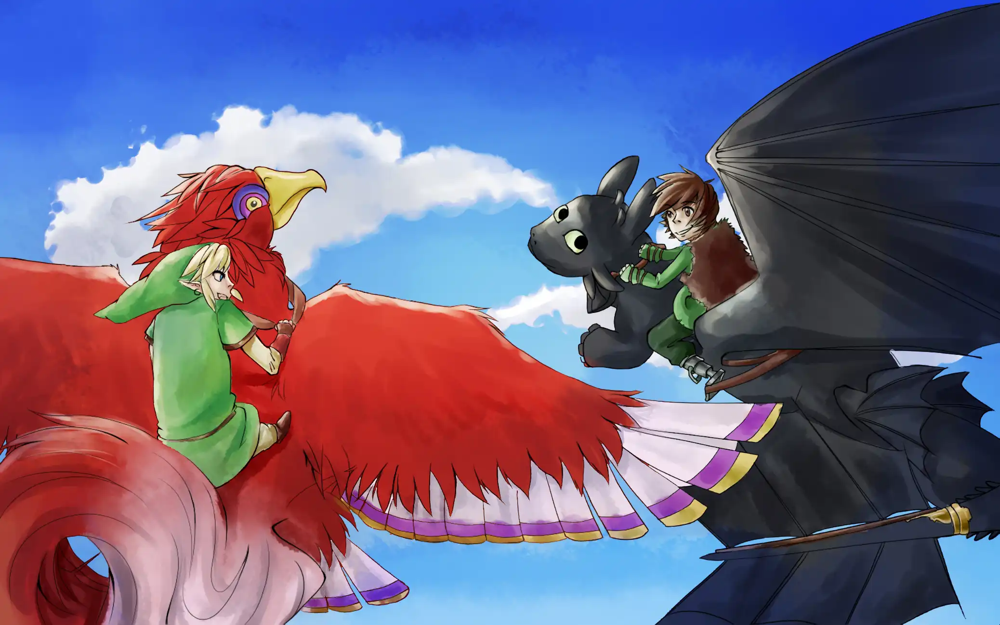

Introducing Adaptive Music 2025.07.16.0 - Zenith Tower Update
Adaptive Music has been rewritten, again!
- By default, starting and stopping (as well as cross fade) will schedule 100ms in the future, to give the Web Audio API time to prepare and process requests. This change allowed simplifying the code and getting rid of the old hacky and inconsistent desync fix.
- If bar duration is provided, all cross fade will intentionally delay the cross fade until the current bar finish, which should avoid awkward music change in the middle of a bar/measure
- Cross fade now use the Equal power crossfade (Square root crossfade) algorithm.
WEREWOLF MODERATOR HAS *NOT* BEEN REWRITTEN!
Instead, Link has been cooking behind the scenes, in order to bring the User Interface and User Experience to the next level!
Here are some highlights of the recent changes since the last Werewolf Moderator post (announcing New NEW Werewolf Moderator or Werewolf Moderator v3)


WEREWOLF MODERATOR HAS BEEN REWRITTEN!
Deja Vu? Nope, I have rewritten it again (in other words, this is New NEW Werewolf Moderator, or Werewolf Moderator v3). This major rewrite
Switch from comma-separated Player / Target ID(s) input to select menu to add/select Player(s) / Target(s).
Bring Werewolf Night’s custom player name to the next level. Previously, it’s very hard to discover this feature, not that it’s even useful anyways. Now, instead of seeing “9 has died” and having to figure out who that is, if moderators have setup players’ name in the setup screen,
"<Player Name> has died"will show up.Switch from one player - multiple roles model to one player - one role model. Don’t ask me why I over-complicated this. I don’t know.
Added “alternates” (biến thể) for moderators that don’t like the app’s default ruleset and prefer sticking to the original Ultimate Werewolf ruleset.
QOL: Game Recap of what happened each night (what role choose who, who died/was saved, for what reason, …)
Use Zod to parse save file. No more unnecessary “Old Version’ warning, now, only IF the save file format changed, you will be prompted to clear save file.
… And many more QOL improvements!
What's new in Aozta & Openclozes 2024.09.16.0?
Implemented support for custom TXT files! You can now bring your own questions! Just upload your TXT file somewhere that you can get a link, then visit https://20050703.xyz/aozta and paste the link there, click load, and that’s it!
Don’t know what the structure of the TXT should look like? Don’t worry! Check out the manual (documentation) at https://20050703.xyz/aozta/man/. There you will find examples and detailed information on how to craft the txt file so Aozta can understand and render fancy stuff like bold and underline and italic properly.
Openclozes also received support for custom TXT files as well. As for the structure of the TXT file, it’s just the first line is the title, eveyrthing after that just wrap the answer you want to remember in {bracket} and Openclozes will automatically convert it to input that the user can type in there answer to test if they remember the answe.
What's new in Adaptive Music 2024.09.06.0?
- Fixed desync fix not working on firefox.
What’s new in Adaptive Music 2024.07.29.0?
Fixed desync for real this time. I used a very sophisticated technique called “start the audio track muted, calculate the expected offset and the actual offset, then use that information to start the audio track unmuted/fade in”
The only downside is that it will take an extra ~0.1s to start an audio track, but the result is that tracks no longer desync for real this time.
What’s new in Adaptive Music 2024.07.27.0
- You can now customize the fade in and fade out duration for same group and different group audio tracks
- Pernamently borrowed Celeste FMOD’s fade in and fade out curves. Switching between same group tracks (for example, switching beween phase 2 and 3 of the Passionfruit Pantheon preset) should no longer result in noticable dip in overall volume.
What's new in Adaptive Music 2024.07.13.0?
- Added Starfruit Supernova and Passionfruit Pantheon presets. Both songs are used in Strawberry Jam Collab Expert Heart Side and Grandmaster Heart Side, respectively, and were the original inspiration for this project.
Introducing E5Y Final 2024.04.10.0 - The Lucia update!
Questions can be bulk created from a CSV file by running the scripts
scripts/1start.js,scripts/2obstacle.js,scripts/3accelerate.js,scripts/4finish.js, andscripts/5final.js. (The CSV file can be created from the excel template file)Implemented proper authentication and sessions management.
Passwords are no longer stored in plain text in sessionStorage.
Authentication and sessions management are now handled using Lucia Auth.
Accounts can be bulk created by running the script
scripts/users.jsSemantic Compression: Socket authentication is now handled using a shared socket middleware instead of multiple authentication check, one for each event
Control: Rolled back to the simpler reconnecting indicator.
Viewer: Switched to Web Audio API because HTMLAudioElement sucks
questions.json has been split into 1start.json, 2obstacle.json, 3accelerate.json, 4finish.json, and 5final.json
Introducing Adaptive Music 2024.04.06.0 - The Field Battle update!
ADAPTIVE MUSIC HAS BEEN REWRITTEN!
- You can now re-order tracks!
- You can now change the name of the track! (By default the name of the track is the file name)
- You can now disable looping!
- You can now change the loop end!
- You can now change the volume of an individual track!
- You can now import and export the current configuration! Please note that the audio track itself is not included in the configuration (I don’t think including the audio files in the configuration is a good idea), so you will need to re-upload the audio files then import the configuration to restore everything!
Introducing Olympus 2024.04.05.0 - The MC, Excel, and Lucia Authentication update!
- Implemented MC view! Basically the same as Viewer but with the solution always shown
- Questions can be bulk created from a CSV file by running the scripts
scripts/kd.js,scripts/vcnv.js,scripts/tt.js, andscripts/vd.js. (The CSV file can be created from the “ods” “excel” template file) - Implemented proper authentication and sessions management.
- Passwords are no longer stored in plain text in sessionStorage.
- Authentication and sessions management are now handled using Lucia Auth.
- Accounts can be bulk created by running the script
scripts/users.js - Semantic Compression: Socket authentication is now handled using a shared socket middleware instead of multiple authentication check, one for each event
- Control: Implemented E5Y’s (old) reconnecting indicator
- Viewer: Switched to Web Audio API because HTMLAudioElement sucks
Introducing E5Y Qualifier 2024.04.02.0 - The Lucia Authentication update!
- Implemented proper authentication and sessions management.
- Passwords are no longer stored in plain text in sessionStorage.
- Authentication and sessions management are now handled using Lucia Auth.
- Accounts can be bulk created by running the script
scripts/users.js - Semantic Compression: Socket authentication is now handled using a shared socket middleware instead of multiple authentication check, one for each event
- Viewer: Switched to Web Audio API because HTMLAudioElement sucks
- questions.json has been split into 1.json, 2-5.json, and 6.json
What's new in Werewolf Moderator 2024.03.25.0?
- Fixed regression caused by recent major rewrite, let’s hope this minor rewrite doesn’t have any regression.
- Implemented custom player IDs. The moderator can paste a comma separated string of players or type the number of players then click generate to generate player IDs from 1 to the number of players automatically.
- Implemented the following features to the players screen:
- Adding players
- Removing players
- editing players
- ID
- index (to re-order contestants)
- score
- Implemented partial support for scoring system. This is considered partial support because the scoring system does not cover all roles yet, and is subject to changes until the scoring system is finalized
- Implemented logs in addition to the kill feed. To avoid clutter currently the logs entries only show up in the “History” section. The logs logs the following actions:
- A role’s target player IDs
- If bear is enabled, logs if at least one person next to Bear is werewolf.
- A player’s score was added.
- A role has won.
- Breaking changes: Werewolf Moderator’s save format has changed, please clear your save
What's new in WIST 2024.03.16.0?
- Pressing the browser’s back and forward button (or pressing Alt+Left/Right) now properly navigate back and forth between pages.
- Options:
- The delete button has been replaced with “to remove a key, click it”
- Added a “Reset All” button
- Added a “Import & Export” section to export and import config.
What's new in Futsal 2024.03.15.1?
Implemented rotating players!
- On desktop: First select a player by clicking a player using a mouse, then click and drag the rotate symbol
- On mobile: First tap to select a player, then tap the rotate symbol, then tap somewhere else to rotate the player facing towards that location.
What's new in Futsal 2024.03.15.0?
- Implemented mobile support! On mobile, first tap a player to select that player, then tap somewhere else to move that player to that location!
- Added a “Copy URL to clipboard” button to easily share the URL (which includes the room code) to other people!
- The homepage and the room page now show an error message if the server send back one to give feed back to end users
What's new in Werewolf Moderator 2024.03.13.6 - 2024.03.13.7?
- Fix enabling Cupid/Flutist doesn’t enable Couple/Hypnotized
- Vampire: Fix player ID not being marked as more than 1 players
- Old Hag: Added companion role: Muted
- Vampire: Villagers now also need to kill all vampires in order to win
- Seer: Fix vampire being treated as third party
What's new in Werewolf Moderator 2024.03.11.5 - 2024.03.13.4?
Implemented the following roles
- Lycan (Người Hóa Sói, 2024.03.11.5): Seer will mistaken Lycan for belonging to the Werewolf side even though Lycan isn’t.
- Martyr (Thiếu Nữ, 2024.03.11.6): Martyr can choose to sarifice themself to save the person who is supposed to be hung.
- Village Idiot (Tên Đần Độn, 2024.03.11.7): Village Idiot will always vote “hang”
- Pacifist (Người Hòa Bình, 2024.03.11.7): Pacifist will always vote “save”
- Cursed (Bị Nguyền, 2024.03.12.0): Start out as a villager, but when bitten by a werewolf will turn into a werewolf instead of dying.
- Lone Wolf (Sói Cô Đơn, 2024.03.13.0): Lone Wolf only wins if they is the only werewolf alive when werewolves win.
- Apprentice Seer (Tiên Tri Tập Sự, 2024.03.13.1): Apprentice Seer will become the new Seer when the original Seer dies.
- Old Hag (Phù Thủy Già, 2024.03.13.2): Every night, choose a player. That player will not be able to talk and vote during the next immediate morning.
- Drunk (Say Rượu, 2024.03.13.3): When setup, add one more role. During the first two nights, drunk will be a normal villager. In the third night, drunk will become the role that is left over
- Vampire (Ma Cà Rồng, 2024.03.13.4):
- Every night, choose a player. That player will die if there’s at least 2 people voting for them.
- Vampire cannot be killed by werewolf
- Vampire only won if there’s no werewolf alive and the number of alive vampires is more than (or equal) half of the number of players alive, similar to werewolf.
- With the addition of Vampire, there is also a new requirement for werewolf to win: there must be no alive vampires.
What's new in Werewolf Moderator 2024.03.11.4?
New feature: You can now edit a player’s lives and roles (remove/add) in the players page.
Bug fixes:
- Werewolf Moderator no longer add the villager role to player ID 0.
- Werewolf Moderator now properly set the player’s lives to 1 when adding the villagers role.
What's new in Werewolf Moderator 2024.03.11.0?
WEREWOLF MODERATOR HAS BEEN REWRITTEN!
- You can now select the Werewolf Moderator deck you want to use (Ultimate Werewolf, Ma Sói Việt Hóa, or both).
- Reworked the top toast. The top toast message now reflect if Werewolf Moderator autosaved, loaded save, imported save state, or copied save state to clipboard
- When switching back to the setup page, Werewolf Moderator now remember the previous page and switch back to it correctly when you press “Start”
- Debug: You can now import save state, copy save state to clipboard, and view the save state in plain text in the setup and day page.
The beginning of Futsal
Link is proud to announce yet another project, Futsal!
Futsal is inspired by https://tactical-board.com/uk/mini-football, but with a feature that made it stand out: You can create a room and share the room code with your friends/teammate/students and they can join your room.
When one person move a goalkeeper/player/ball, it will send an update to the server which in turn send the update to all other people in the room.
Futsal is available NOW at https://futsal.20050703.xyz/
What's new in Werewolf Moderator 2024.02.26.1?
Implemented two new roles: Death Photo and Bear
Death Photo
- Party: Villager
- Every night pick one person. If that person died, Death Photo will take over that person’s role and moving forward belong to that role’s party.
Bear:
- Every day, after the moderator announced people who died (if any), if there’s at least one werewolf next to the bear, the moderator will announced that.
Quản Trò Ma Sói 2024.02.23.0 có gì mới?
Setup: Thêm ô nhập số lượng người chơi để phục vụ cho 2 vai trò Dân Làng và Hiệp Sĩ
Thêm 2 vai trò mới: Dân Làng và Hiệp Sĩ
Dân làng:
- Không có chức năng đặt biệt
- Dân làng không bao giờ được gọi dậy nên cuối đêm đầu tiên, trước khi chuyển sang ban ngày, hệ thống sẽ dựa vào số lượng người chơi để đánh dấu tất cả người chơi không có vai trò đặc biệt là dân làng.
Hiệp Sĩ:
- Gọi dậy đêm đầu biết mặt
- Khi bị sói cắn (chỉ sói cắn), sói gần nhất bên trái (you can assume the ids are clockwise so the closest to the left will be the first wolf that has a higher number) sẽ chết trong đêm sau. Hệ thống sẽ dựa vào số lượng người chơi để tự động làm cho sói chết trong đêm sau
Sửa lỗi:
- Sửa lỗi bấm nút quay lại không kiểm tra đêm hiện tại, dẫn đến tình trạng xuất hiện đêm số âm. Cảm ơn Toàn Lê
- Sửa lỗi bấm nút tiếp theo không khóa lại ô nhập ID người chơi từ đêm 2 trở đi
- Sửa lỗi màn hình buổi sáng hiện nhiều phe thắng. Chú ý rằng đối với những vai trò thuộc phe thứ ba (cặp đôi, thôi sáo, thiên thần, chán đời), chuyện xảy ra trường hợp nhiều vai trò thuộc phe thứ ba thắng là bình thường. Lỗi được sửa ở đây là ví dụ như cặp đôi thắng giao diện vừa hiện cặp đôi thắng vừa hiện dân/sói thắng.
- Sửa lỗi một số vai trò không kiểm tra có bị nguyệt nữ ngủ chung hay không
- Sửa lỗi kiểm tra nguyệt nữ ngủ chung không đúng trong trường hợp một vai trò có nhiều người.
- Sửa lỗi các role thắng khi chết (chán đời, thiên thần) không kiểm tra có được vai khác cứu hay không.
Quản Trò Ma Sói 2024.02.22.0 có gì mới?
Thêm 2 vai trò mới: Thổi sáo và Anh Em
Thổi sáo:
- Mỗi đêm thôi miên 2 người
- Sau đó, thổi sáo đi ngủ và tất cả những người bị thôi miên dậy để nhìn mặt nhau (chỉ biết mặt chứ không biết role)
- Thổi sáo thắng khi tất cả mọi người còn lại đều đã bị thôi miên
Anh Em: Giống dân làng, nhưng đêm đầu anh em được gọi dậy nhìn mặt nhau
What's new in WIST 2024.02.13.1 - 2024.02.14.0
Quality of Life:
- During the Ready Set Go countdown, you can now see the current piece + next 5 pieces (for a total of 6 pieces!)
- During the Ready Set Go countdown, you can now charge DAS like TETR.IO!
- Piece now spawn 1 row higher (row 22&23 instead of 21&22)
- Singleplayer / 40 Lines: Implemented a yellow line to indicate the number of lines left, inspired by TETR.IO
- Multiplayer: Implemented a one second garbage travel delay. During this time, a basic garbage travel animation will play, with the garbage segment colored yellow, indicating that the garbage is cancellable but not tankable.
Consistency: WIST has been updated to be consistent with 20050703.xyz, which includes the new back button, primary color, top header style, and allow changing the theme.
Bug fixes:
- Singleplayer: Fix retrying doesn’t reset the garbage bar
- Implemented true 20G. 0ARR no longer override 20G.
What's new in WIST 2024.02.13.0?
Yes I’m revisiting this because there are still features from the original archived project that I haven’t implemented (and new one as well), but I might work on multiple project so if I got bored coding one I can switch to another
- Fix holding a piece skip the spawn valid (block out) check
- garbage queue are repurposed for single player modes.
- 40 lines: showing progress how many lines are cleared / 40 lines
- ultra: Showing time left
- Marathon: Showing progress towards next level up
What's new in Werewolf Moderator 2024.01.20.1?
NEW FEATURES
- Added an old save warning
BUG FIX
- Fix everything not updating because I forgot how Svelte works 💀
What's new in Werewolf Moderator 2024.01.20.0?
NEW FEATURES
- IMPLEMENTED EVEN MORE BRAND NEW ROLES!
- Thief: Whoever gets the thief then in night one (before anything else), looks at the extra roles and swaps the thief for one of them! (Must swap for a wolf if it is there). Thus, they know what roles (if any special roles at all) are NOT in the game. (copy pasted from https://boardgamegeek.com/thread/65100/what-do-hunter-and-thief-do)
- Tanner (not SmallAnt): If tanner was killed by werewolf, tanner wins.
- Mayor: In the day, mayor’s vote are counted as 2 votes
- Wolf cub: If wolf cub dies, the next day werewolf can kill 2 people
- Boss werewolf (sói trùm): Werewolf can kill 2 people until one werewolf dies.
- Minion: Know who’s werewolf.
- If you don’t recognize any roles, that’s because this is a mess and I’m basically adding roles from 2 different werewolf variation, werewolf ultimate & ma sói việt hóa. If there’s any unexpected outcome with different roles interaction feel free to send me a message.
- Export & Import save state. Mostly used for debugging purposes. If you encounter any bugs please remember to copy the save state to clipboard and send me the debug info, but I will ask for it if you forgot don’t worry
- Before Release Candidate 14 there was a bug that happen when you reload the page (all players will come back alive). Release Candidate 14 fixed this by forcing the moderator to click the “confirm player ID” button. Even though one might argue that the time this change add is negligible, in my opinion little things add up. Simply put, the first night is already long and I don’t want to make it longer, so I don’t like this change. This update change it so that clicking the confirm player ID is no longer required. To avoid accidentally clicking the input (which would revive all players once the input is blured/unfocused), from the second night onward the input is by default disabled, require clicking the “sửa player ID” button
BUG FIXES
- If moon pick the same person as last night, warn that Moon cannot pick the same person twice in a row, similar to Guard’s warning.
BREAKING CHANGES
- The save format has once again changed, please clear save. Be warned that if you do not clear the save, it might look like everything work but because I added new roles, the roles index/order has shifted and will cause weird bugs that will go unnoticed.
What's new in Werewolf Moderator 2024.01.19.1?
- Fix couple not show up even though cupid is enabled in the setup page.
- Fix separate role variables out of sync with the main roles array
- Fix all players’ number of lives got reset when the page is reloaded
- ACTUALLY ACTUALLY FIXED CAT LOSING LIVES WHENN IT SHOULDN’T BE FOR REAL THIS TIME 🐈
- Fix witch target inputs not being disabled when it should be
What's new in Werewolf Moderator 2024.01.19.0?
HOT FIXES
- 2024.01.17.5
- ACTUALLY fixed cat breaking everything for real this time 🐈
- Fix the “(nguyệt nữ ngủ chung)” message appear when it shouldn’t be
- 2024.01.17.6: Debug stuff
NEW FEATURES
- The setup page is now separated into two sections, werewolf and villagers.
BUG FIXES
- Fix cat losing lives when it shouldn’t be 🐈
- Fix pressing start does not set the current night to 1, leading to roles that only wake up once not appearing
- Fix witch not knowing the existence of white werewolf kill
BREAKING CHANGES
- Mostly internal restructuring to somewhat future proof making it easier to add new roles
- How the game save data under the hood has been changed. If it stuck at the loading save screen there should be a button to clear the save. If it stuck at a blank page (there’s nothing on the screen) please contact me.
What's new in Werewolf Moderator 2024.01.17.4?
NEW FEATURE
- Nguyệt nữ. Người bị chọn sẽ không được dùng chức năng trong đêm
BUG FIXES
- Fix cat breaking everything 🐈
What's new in Werewolf Moderator 2024.01.17.1?
NEW FEATURES
- Reimplemented win condiditon message.
- Implemented cat. Cat has 9 lives, loses one every time the moderator press the “Solve” button when it’s day UI, loses two lives every time werewolf bite the cat, and loses two lives everytime the cat want to see another player role.
- The setup page has been redesigned from mixed between number input and toggles to toggles exclusive
- Disable the target ID(s) if the role is already dead.
BUG FIXES
- Fix an issue where killing doesn’t work
- Fix an issue where roles that does not have role IDs suddenly appear the target IDs
- Fix an issue where killing a player does not kill that players in all roles
- Fix kill feed not updating
- Fix the clear save button doesn’t work because prompt doesn’t work for some reason
- Fix “elder died” message showing when it shouldn’t be and not showing when it should be. (aka I forgot a ! bruh)
- Fix white werewolf werewolf list still show werewolf that’s already dead
BREAKING CHANGES
- Updating the cupid’s target IDs no longer update the couple player IDs
What's new in Werewolf Moderator 2024.01.17.0?
NEW FEATURE
- Roles with target now show who’s still alive
- Except for cupid and hunter, roles with target(s) are now automatically cleared when pressing the solve button to prepare for the next night
- Kill log has been replaced with an easier to understand kill feed
- Before: 3 got killed by hang, couple, hunter
- After:
- Hang 1
- (1) couple kill 2
- (2) hunter kill 3
- Kill log now track full game, allowing a end game review of what happened
BUG FIXES
- If the target player is already dead return early to fix the following bug:
- Couple 1 - 2
- Someone kill 1
- 1 kill 2
- 2 kill 1
- Log/kill feed show up as 1 kill 2 AND 2 kill 1
- The kill function now keep track of the kill chain to fix the following bug:
- Guard protect 3
- 2 is Hunter, target 3
- Couple 1 - 2
- 1 got hanged
- 1 kill 2
- 2 kill 3
- Expected: 3 got kill, since guard only protect at night
- Actual: guard protect 3 even though it’s day
- The solve button now disable itself when clicked to avoid accidentally double clicking (re-enable on the next day)
- Fix a bug where roles that wake every nth night does not show up in the first night
- Fix a bug where roles that only wake up once still wake up every night.
- Fix a bug where after clicking the clear save button and confirmed the are you sure prompt, another are you sure prompt appear.
- Fix after going back to the projects page, when trying to close/reload the page a “are you sure” prompt appear.
- Fix the clear save button clear everything in localStorage, it should only clear the one that are actually used by Werewolf Moderator.
TODO
- Reimplement win condition screen
- White werewolf: werewolf list should not show werewolf that are already dead
The beginning of Werewolf Moderator
Link is once again proud to present
A standalone helper tool for Werewolf Moderator
https://20050703.xyz/werewolf-moderator
Currently Werewolf Moderator only support roles that Castlevania usually play. I do plan to support more because werewolf night has like 50 people last year
Had a lot of fun doing this, this is probably my quickest Minimum Viable Product (I started this 2 days ago lol)
The beginning of Adaptive Music
Link is once again proud to present
A standalone adaptive music controller using Web Audio API
https://20050703.xyz/adaptive-music/
This was originally developed for E5Y and Olympus to have adaptive background music but I have decided to separate this into its own project.
Had a lot of fun messing around with adaptive music and Web Audio API, the original implementation is such a pain in the ass to loop seamlessly because HTML Audio Elements sucks.

The beginning of Social Online Study
In collaboration with a group at HCMUT (with the help of one of my old friend at PTNK to connect between us)
Link are proud to present
Social Online Study
Check it out at https://sos.200507003.xyz/
The code is also open source & licensed under AGPL3, take a look at how terrible my code is https://git.sr.ht/~lts20050703/sos
Due to time constraints, everything is pretty much hard coded, from the font size to the position and dimensions of stuff.
It’s not really responsive as I would like it to be, especially on portrait screen, but the design team didn’t have time to make a portait design either.
Nonetheless, I’m pretty proud of what I have done.
I have learned many things, from how to do authentication properly (previously I just store plain text password in local/session storage) to basic SQL and SQLite stuff.
Now that I’m done with that, I’m catching up with Advent of Code and will try to finally bring E5Y and Olympus to Release Candidate (and maybe stream playing games too!)
The beginning of Năng Khiếu Library / Encode
This is such a weird request, but for whatever reason librarians need to encode the book name so I made a encoder! Done in a evening, took like 3 hours, pretty proud of this one, even though on the surface it look and feel it should be simple but it’s really overcomplicated with a lot of edge cases so
Ảo z ta 2023.04.20.18 có gì mới?
- Hóa: Sửa câu hỏi bị thiếu chữ, thiếu ảnh, sai đáp án, chính tả
- Anh: Sửa các câu trong phần bài đọc có số thứ tự câu không trùng khớp, cũng như sửa tiêu đề các phần không có câu hỏi không bị ẩn đi
Ảo z ta 2023.04.20.4 có gì mới?
- Thêm 4 đề Hóa (đề 2 có câu 39 không ai biết đáp án nên đề 2 chỉ có 39 câu thôi)
Ảo z ta 2023.04.19.1 có gì mới?
Viết lại parser (trình phân tích cú pháp)
- Parser cũ phải viết đáp án ABCD trên 4 dòng, mà đề cương có mấy câu đáp án ngắn không viết ABCD trên 4 dòng mà viết trên cùng 1 dòng, phải sửa tay, phiền
- Hỗ trợ in đậm và gạch dưới
- để có thể thêm môn Tiếng Anh mà trang web không nổ 🤯 (trộn thứ tự phần, trộn thứ tự đáp án, trộn thứ tự câu hỏi trong phần ngoại trừ phần bài đọc)
Ảo z ta 2023.04.17.0 có gì mới?
- Nút quay lại, xóa, azota không còn lơ lửng trên màn hình, tránh bấm nhầm
- Tính năng mới: Trước đây dùng chủ đề của hệ điều hành, nay thêm lựa chọn không tự động dùng chủ đề của hệ điều hành, vì hệ điều hành iOS 12 trở xuống không có chỉnh chủ đề được. Cảm ơn Toàn Lê vì ý tưởng này
PS: Các bạn muốn vừa làm vừa kiểm tra đáp án có thể mở chế độ kiểm tra (kiểm tra: bật), thay vì phải liên tục bật tắt hiện đáp án nha! Chế độ này chỉ hiện đáp án bạn chọn là đúng hay sai, không hiện đáp án đúng, với lại nếu chọn sai thì sẽ tự động đánh dấu câu hỏi cần xem lại, trước khi thi có thể bấm nút xóa, lọc chỉ hiện câu hỏi đã đánh dấu xem lại để làm lại các câu đã làm sai!
Ảo z ta 2023.04.17.0 có gì mới?
- Giao diện điện thoại: dời các nút kiểm tra và đáp án lên trên
Ảo z ta 2023.04.16.15 có gì mới?
Sửa ảnh không hiện lên
Technical: forgot to @html so it show up as raw html <img src="/aozta/sinh37386.webp"> instead of actual html
Ảo z ta 2023.04.16.14 có gì mới?
Sửa giao diện trên điện thoại
Ảo z ta 2023.04.16.10 có gì mới?
- Chỉ xáo câu hỏi và đáp án khi bấm nút xóa, đỡ khó chịu khi lỡ tải lại trang, các câu hỏi xáo lại, lẫn lộn câu hỏi đã trả lời giữa câu hỏi chưa trả lời.
Ảo z ta 2023.04.16.9 có gì mới?
- Lọc. Lọc chỉ hiện câu hỏi sai hoặc lọc chỉ hiện câu hỏi chưa làm hoặc lọc chỉ hiện câu hỏi đã đánh dấu xem lại.
Ảo z ta 2023.04.16.8 có gì mới?
- Tính năng mới: Đánh dấu câu hỏi cần xem lại (Để đánh dấu, bấm vào nút kế bên câu hỏi), cũng như tự động lưu vào localStorage
- Nếu chế độ kiểm tra đáp án đang mở (Kiểm tra: Bật), chọn sai đáp án sẽ tự động đánh dấu câu hỏi cần xem lại. Cám ơn Tô Huỳnh Phúc vì gợi ý này
- Sinh: khi hiện đáp án (Đáp án: Hiện), với những câu đếm có bao nhiêu đáp án đúng/sai sẽ hiện thêm ý nào đúng. Cám ơn Nguyen Hai Anh vì gợi ý này.
Ảo z ta 2023.04.16.6 có gì mới?
- Do nhu cầu phổ biến (thật ra là do nhu cầu của 2 người), đã thêm lại kiểm tra đáp án để có thể vừa làm vừa kiểm tra đáp án từng câu
Ảo z ta 2023.04.16.4 có gì mới?
- Cuối trang hiện tổng số câu, số câu đã làm, liệt kê câu chưa làm, nếu mở đáp án thì sẽ hiện thêm số câu đúng và liệt kê câu sai
- Technical: Checkbox -> Toggle because larger touch target
Ảo z ta 2023.04.15.14 có gì mới?
Hỗ trợ các trình duyệt hỗ trợ ECMAScript 2015 (ES6) https://caniuse.com/es6
- Chrome >= 51
- Edge >= 15
- Safari >= 10 (iOS >= 10)
- Firefox >= 54
- Opera >= 38
Cảm ơn Toàn Lê đã giúp đỡ trong việc thông báo trang web không chạy được trên điện thoại iPhone 6 iOS 12 cũng như thông báo đã chạy được sau khi cập nhật
Ảo z ta 2023.04.15.13 có gì mới?
- Sửa hệ thống lưu đáp án tự động
Ảo z ta 2023.04.15.12 có gì mới?
Sinh: cập nhật nội dung thi cuối học kỳ 2 (xem ảnh đính kèm)

Ảo z ta 2023.04.15.11 có gì mới?
GDCD: Đề cương troll ACBD Bài 8 Câu 24, Bài 9 Câu 5, 15, Trang web của mình không bị ảnh hưởng vì mình không quan tâm thứ tự ABCD, miễn là có đủ ABCD là được, nhưng ảo z ta ngu nên bug, đã sửa.
Ảo z ta 2023.04.15.10 có gì mới?
- Sinh: Thêm một đống giữa kỳ 2 vì cuối kỳ 2 có giữa kỳ 2
- Sửa đáp án GDCD Bài 9 Câu 16:
Để góp phần làm cho đất nước phát triển bền vững, Luật Hôn nhân gia đình và Pháp lệnh Dân số đã quy định vợ chồng có nghĩa vụ:
D. Lựa chọn giới tính thai nhi-> B.Thực hiện chính sách dân số và kế hoạch hoá gia đình
What’s new in Ảo z ta 2023.04.15.1?
Just stats at the bottom of the page (total of questions, number of done, of which right and of which wrong, score which is just right/total)
The Beginning of Ảo z ta
I’m tired of having to go through like tens of inboxes, unsent, then sending the new Azota links (also having to delete the facebook post and post the new Azota links), so this time, I make a index site, but that’s boring, so I coded my own Ảo z ta inspired by my previous Openclozes design
